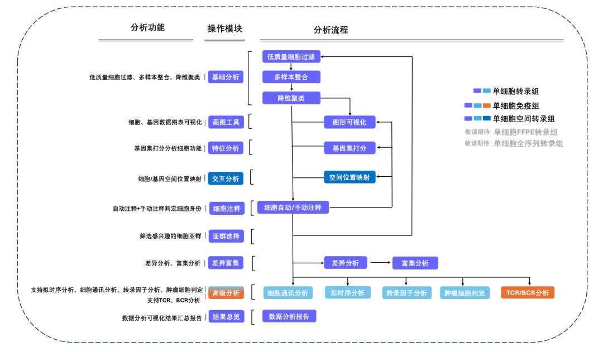
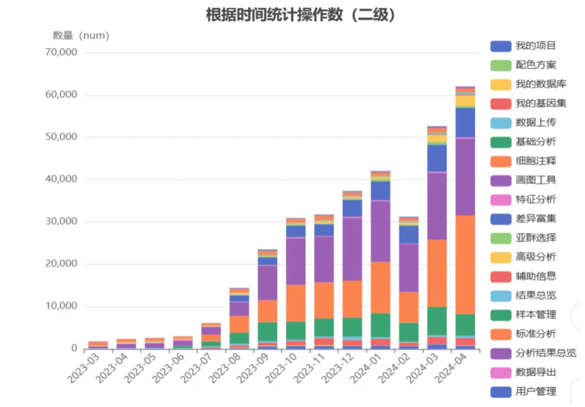
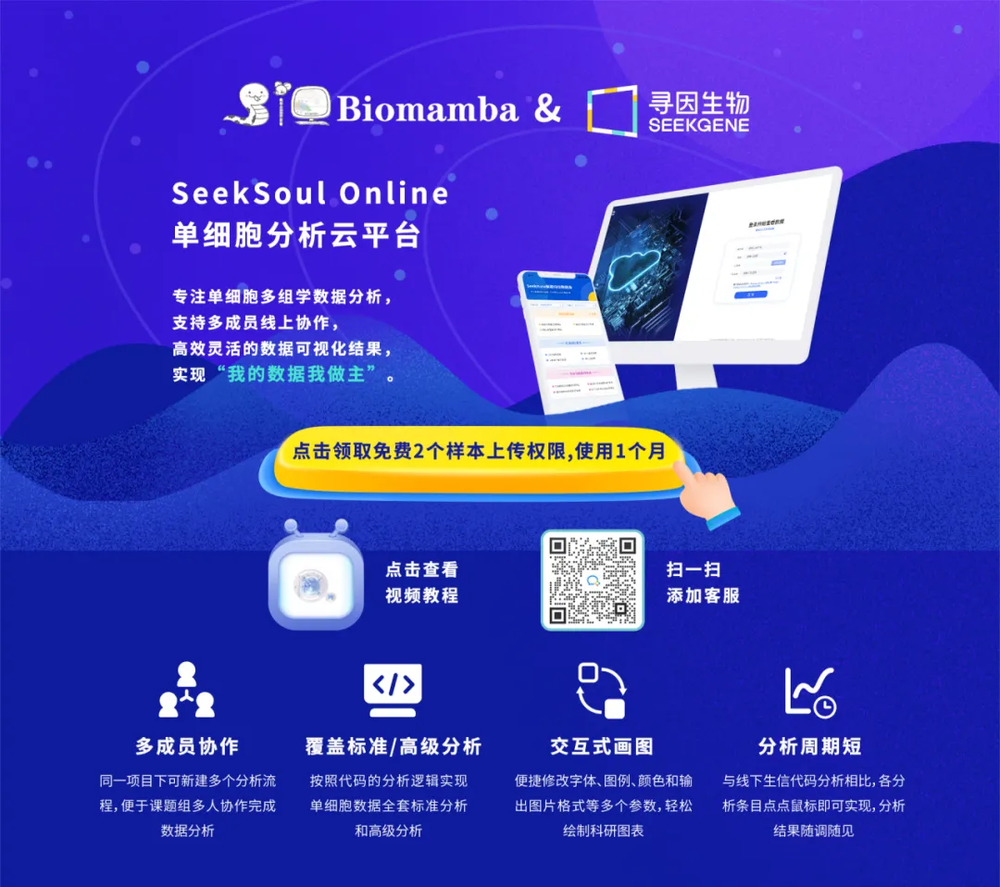

无痛分析单细胞数据
原文：https://mp.weixin.qq.com/s?__biz=MzAwMzIzOTk5OQ==&mid=2247511143&idx=2&sn=ebb0fc4a9b64995ea4f57caa1048aa0f&chksm=9b3cd537ac4b5c21d1f26b1594f8199f86e18797585cf3bd6f2a2a1f6b35721a69671217652e#rd 合集：单细胞云平台
当今基因测序数据量在爆炸性增加，生信分析面临着算力要求高 、代码 软件繁多 、科研人员协作分析困难 等一系列痛点。为解决这些问题，各种生信云平台应运而生，它提供了一系列生物信息学工具和资源，用于支持科研人员在生物学数据的分析、可视化和解释方面的需求。SeekSoul Online便是其中一个，相信对于想要快速上手单细胞数据分析的你来说会是个惊喜：
云平台地址：
https://seeksoul.online/t_static/Biomamba/Biomamba.html
使用教程可见：
说在前面
您通过生信培训班的集训学习，能够自行完成单细胞数据个性化分析了嘛？
您的课题组进行数据分析，会因为繁琐的生信代码报错而拉长科研周期嘛？
您还在为单细胞数据的图表绘制和公司反复沟通苦恼嘛？
但其实 ，Don’t worry，单细胞数据分析真的很简单 。
点击下方链接抢先 注册，即刻赶超 同行，率先 发文：
https://seeksoul.online/t_static/Biomamba/Biomamba.html（文末阅读全文可跳转）
云平台介绍
SeekSoul Online 云平台覆盖3’scRNA、5’scRNA和seekspace等寻因生物自研产品标准分析和高级分析流程 ，分析结果与代码执行分析结果高度一致，为用户提供疾病机制探索、生物靶标挖掘、基础科学研究的多领域全方位深层次数据分析解决方案。
云平台优势
1.无需生信基础
鼠标一键提交，简单易用，2周学习即可入门；
2.支持多团队成员协作
项目关联多个账号，实现跨课题组多成员线上协作分析；
3.一站式自动化分析方案
从原始数据到标准分析报告完成，仅需2~3天；
4.高质量单细胞科研图表
支持鼠标调整参数绘制可供发文的高质量图表；
5.分析结果汇总报告
实现分析过程有记录，分析结果有汇总，定制您的专属报告。
云平台分析流程

注：云平台支持单细胞转录组、单细胞免疫组和单细胞空间转录组分析，各模块一键提交任务完成分析。
图1 SeekSoul Online云平台分析流程总览
云平台教程出新啦
SeekSoul Online云平台承载项目和分析流程操作数的稳步增长（图2）让我们不得不先小小骄傲一下，结合过去半年的功能升级和用户反馈，我们精心制作了一套云平台操作视频教程，以助力新用户快速熟悉平台。这些教程根据分析模块进行分类，全面覆盖了单细胞数据的标准和高级分析流程，旨在帮助用户以更高效、简便的方式挖掘数据价值。

图2 SeekSoul Online承载分析流程操作稳步增长
云平台操作视频介绍的功能模块如下
1. SeekSoul Online云平台页面布局和资源总览 2.基础分析模块 | 单细胞分析流程新建和准备（过滤、整合和降维聚类） 3.细胞注释模块 | 自动注释和手动注释判定细胞身份 4.画图工具模块 | 一键任务提交，绘制高质量科研图表 5.差异富集模块 | 差异富集比较方案和结果可视化 6.亚群选择模块 | 目标亚群的筛选和重新分析 7.高级分析模块 | 细胞轨迹、细胞通讯、肿瘤细胞判定等 8.交互分析模块 | 细胞空间位置映射 9.结果总览模块 | 分析结果汇总生成专属报告 10. SeekSoul Online | FAQ问题集和在线咨询
下方有视频教学的链接，有对单细胞数据分析感兴趣的老师欢迎注册登录哦~
视频教学链接：
https://space.bilibili.com/1209053733/channel/collectiondetail?sid=2881928&spm_id_from=333.788.0.0
扫一扫 观看视频教程
** **
云平台活动
此外，寻因生物联合Biomamba推出云平台活动，通过下方链接注册的新用户即可享受上传两个样本权限 。开启您的单细胞分析之旅，准备好零代码发单细胞文章吧！
活动一 ：申请有奖-注册的用户(限前80个账号)，联系下方客服微信立即开通2个样本分析权限，体验有效期半个月；
活动二 ：完成体验云平台分析流程后提供问卷测评(问卷链接：https://www.wjx.cn/vm/QIX0xRI.aspx# 。
联系下方客服微信反馈截图，额外多送两个样本权限哦 ~
扫一扫 添加客服
活动链接：
https://seeksoul.online/t_static/Biomamba/Biomamba.html（文末阅读全文可跳转）
